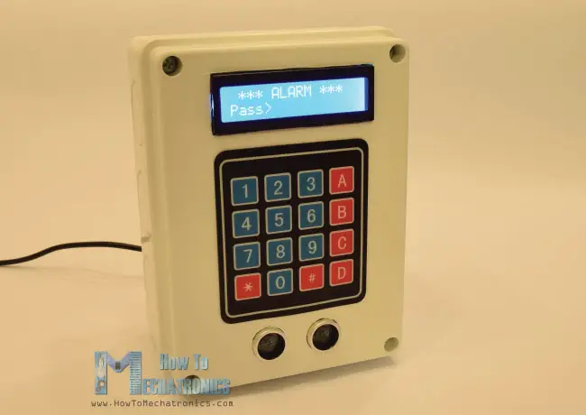
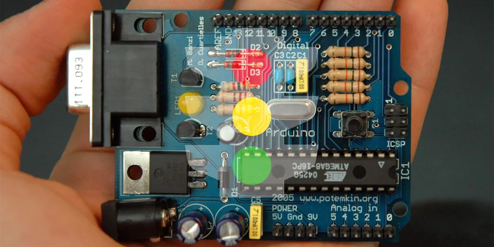
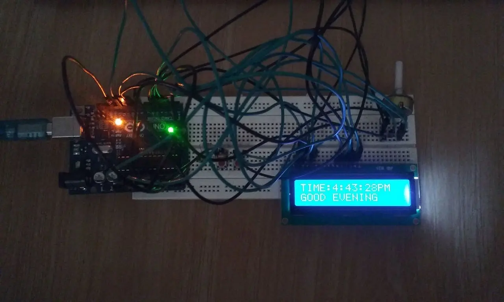
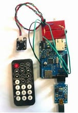
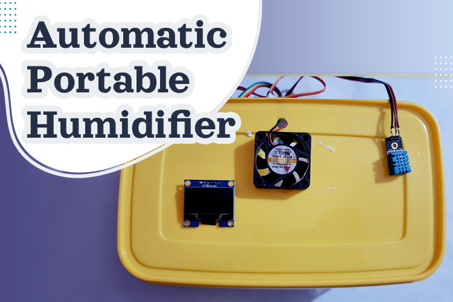

Security and Alarm System Project
The Arduino Security Alarm System with Ultrasonic Sensor and Password Protection is a project designed to provide a reliable and customizable security solution. The system is activated by pressing the A button, after which a 10-second countdown begins. Once the countdown ends, the system becomes armed and ready to detect any objects or movements within its range.
To learn more how to do the Arduino Security and Alarm Project visit howtomechatronics.com for step by step instructions.

Traffic Light Controller Project
The Arduino Traffic Light project is a fun and engaging endeavor that can be completed within a short period of time, requiring minimal effort. This project provides a step-by-step guide on building a traffic light using an Arduino microcontroller, allowing enthusiasts to gain hands-on experience in electronics and programming. Additionally, the project explores the possibility of modifying the circuit to create an advanced variation.
To learn more how to do the Traffic Light Controller Project visit makeuseof.com for step by step instructions.

Simple Time Clock Project
The Arduino Time Clock project is a versatile and practical endeavor that involves building a digital clock using the Arduino microcontroller platform. This project focuses on creating a reliable and accurate timekeeping system that can display the current time and date while providing additional functionalities. By engaging in this project, participants can delve into the world of Arduino programming, electronic components, and time management concepts.
This Arduino Time Clock project offers a practical and educational experience for enthusiasts interested in electronics, programming, and time management. By building a functional timekeeping system, participants gain valuable insights into Arduino programming concepts, component integration, and customization possibilities. Whether used as a standalone clock or as a foundation for more advanced projects, the Arduino Time Clock provides a solid foundation for exploring the exciting world of Arduino-based timekeeping solutions.
To learn more how to do the Arduino Time Clock Project visit projecthub.arduino.cc for in-depth instructions.

The Arduino Wireless Remote Control project focuses on establishing wireless serial communication between two Arduino boards to enable remote control functionalities for a wide range of Arduino projects. The project offers a comprehensive walkthrough of the steps involved in setting up the wireless communication and highlights potential challenges and areas for improvement. The primary objective is to create a functional remote control system capable of transmitting both PWM and digital data from one Arduino to another.
To learn more how to do the Traffic Light Controller Project visit instructables.com for step by step instructions.

The DIY Automatic Humidifier project aims to build a device that can effectively increase and maintain the relative humidity in a closed area. Particularly during the winter season when heaters are commonly used, the air's relative humidity tends to decrease. In this project, we will utilize an Arduino microcontroller, a sensor mechanism, and a display to create an automatic humidifier that can monitor and regulate the relative humidity (RH) levels in the atmosphere.
To learn more how to do the Arduino Time Clock Project visit projecthub.arduino.cc for in-depth instructions.
